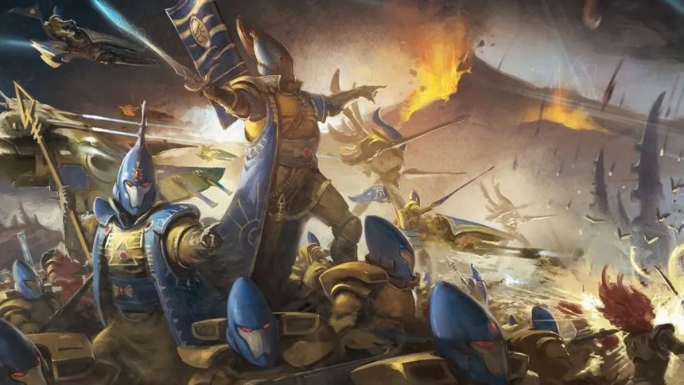
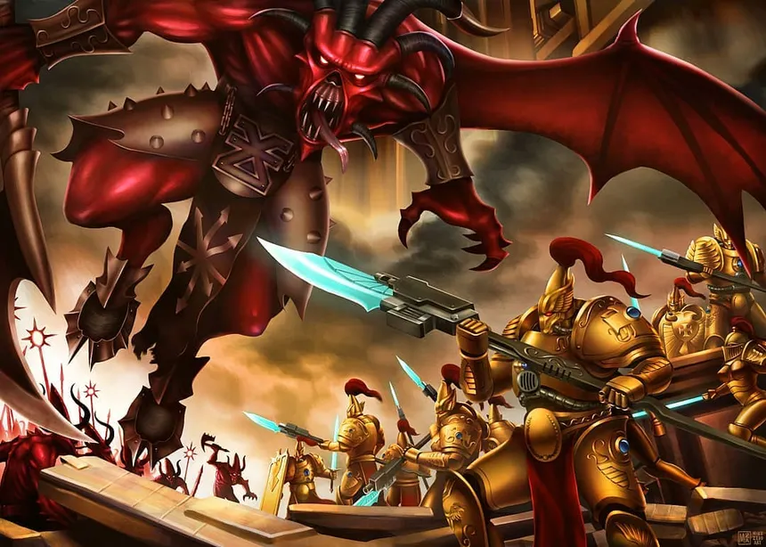

IMPORTANT EVENTS

"Look into the events that shaped the course of the Warhammer universe."
THE HORUS HERASY

The Horus Heresy was a galaxy-spanning civil war in the Warhammer 40K universe, lasting around 9 years (ca. 005.M31 – 014.M31). It was led by Warmaster Horus Lupercal, who, corrupted by Chaos, turned against the Emperor of Mankind.
Key Characters:
Horus Lupercal – Traitor Warmaster and leader of the rebellion.
The Emperor of Mankind – Ruler of the Imperium, mortally wounded in the final battle.
Loyalist Primarchs – Rogal Dorn, Sanguinius, Guilliman, Leman Russ, etc.
Traitor Primarchs – Fulgrim, Angron, Perturabo, Mortarion, etc.
Malcador the Sigillite – The Emperor’s closest advisor.
LEARN MORE:
THE WAR IN HEAVEN

The War in Heaven was a cataclysmic, galaxy-spanning conflict in Warhammer 40K’s ancient past, fought millions of years before Mankind’s rise. It was primarily between the Necrontyr (later Necrons) and the Old Ones, with devastating consequences that shaped the galaxy.
Key Characters:
Silent King (Szarekh) – Leader of the Necrons, who later abandoned them.
C’tan (Star Gods) – Cosmic entities that empowered and enslaved the Necrons.
Old Ones – Ancient, highly advanced psionic species, creators of many races.
Eldar Gods – Deities of the Eldar, who waged war against the C’tan
LEARN MORE:
FALL OF THE ELDAR

The Fall of the Eldar was a catastrophic event in Warhammer 40K’s ancient history, marking the downfall of the Eldar Empire and the birth of Slaanesh, the Chaos God of Excess. Once the dominant race of the galaxy, the Eldar became increasingly hedonistic and corrupt, indulging in excesses that gradually tore at the fabric of reality. Their unchecked depravity led to the formation of a massive Warp storm and, ultimately, the birth of Slaanesh around M25–M30. The psychic shockwave from its creation annihilated most of the Eldar race, destroyed their gods, and created the Eye of Terror, a massive Warp rift at the heart of their former empire.
Key Characters:
Eldar – A once-mighty race whose decadence led to their doom.
Slaanesh (She Who Thirsts) – The Chaos God born from the Eldar’s excess, now their eternal tormentor.
Asuryan, Khaine, and Other Eldar Gods – Nearly all destroyed or consumed by Slaanesh.
Cegorach(The Laughing God) – One of the few surviving Eldar deities, worshipped by the Harlequins.
The Phoenix Lords – Legendary warriors who founded the Aspect Shrines to preserve their warrior traditions.
Vulkan (Primarch of the Salamanders) – Indirectly affected, as the Fall allowed humanity to rise in power.
LEARN MORE:
THE GREAT RIFT

The Great Rift is a massive, galaxy-spanning Warp storm that split the Imperium in half following the 13th Black Crusade and the Fall of Cadia in M41. It represents the most devastating Warp upheaval since the Horus Heresy, disrupting interstellar travel and communication. The Imperium was divided into Imperium Sanctus (loyalist-controlled) and Imperium Nihilus (isolated and overrun by Chaos).
Key Characters:
Abaddon the Despoiler – Leader of the Black Legion, orchestrator of the 13th Black Crusade that led to the Rift’s formation.
Saint Celestine – A resurrected Imperial Saint who led Imperial forces after Cadia’s fall.
Belisarius Cawl – A brilliant Adeptus Mechanicus Magos responsible for the Primaris Space Marines.
Vigilus Defenders – Various Imperial commanders fighting to hold back Chaos incursions.
LEARN MORE:
THE TYRANID INVASON

The Tyranid Invasion is a galaxy-wide event in the Warhammer 40K universe, where the Tyranids, a highly adaptive and hive-minded alien species, invade the galaxy to consume all biological life. Their fleet, known as the Hive Fleet, arrives from beyond the galactic edge, bringing with it overwhelming swarms of monstrous organisms. The Tyranids’ sole purpose is to devour all organic matter, using the resources of entire worlds to fuel their endless hunger. The first Tyranid invasion occurred around M41, and it has been an ongoing threat to the Imperium and other races.
Key Characters:
Swarmlord – One of the most powerful and ancient of the Tyranid synapse creatures, often seen leading the swarm into battle.
Old One Eye – A legendary and highly resilient Tyranid Carnifex known for its brutal strength.
Hive Tyrants – High-ranking Tyranid leaders that control the swarm's strategy and are powerful in both combat and psychic abilities.
The Hive Mind – The collective consciousness of the Tyranid species, directing all Tyranid forces across the galaxy.
Tyranid Prime – A leader that commands lesser Tyranid organisms and supports the greater Hive Fleet.
LEARN MORE: